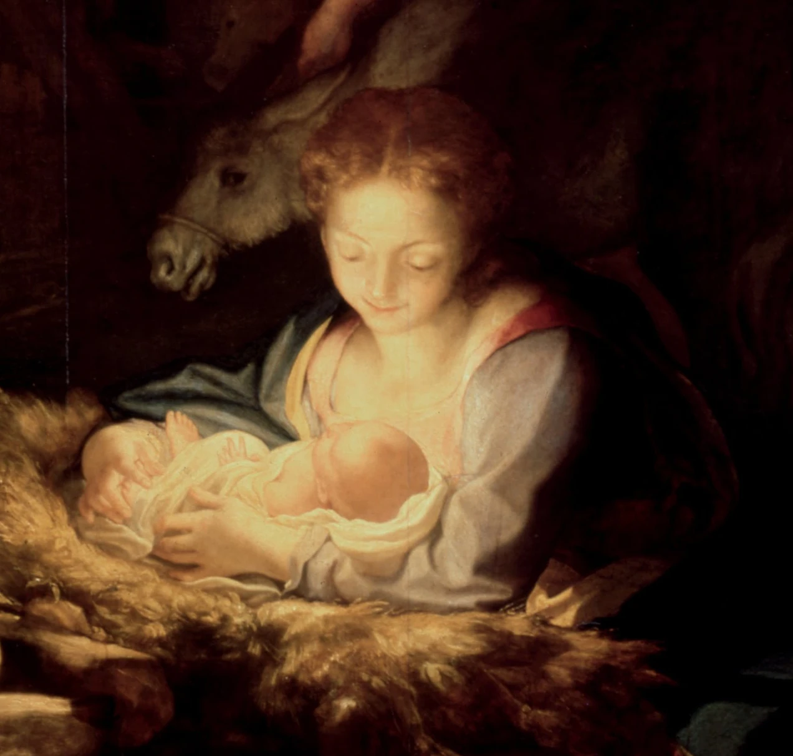
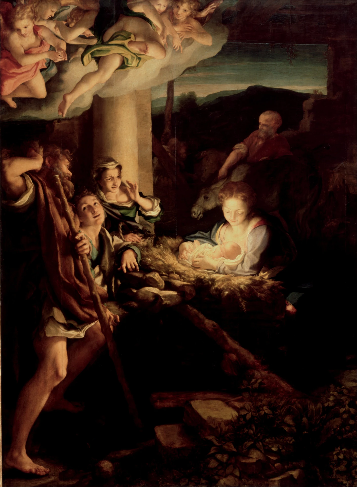
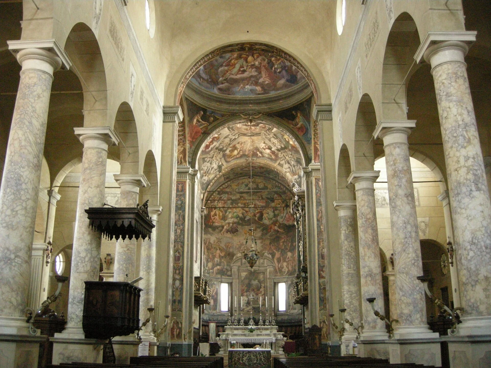
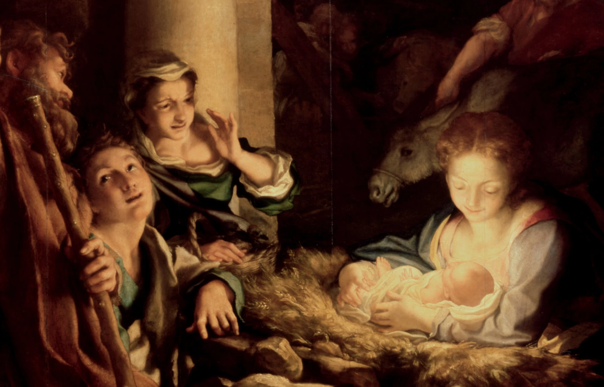
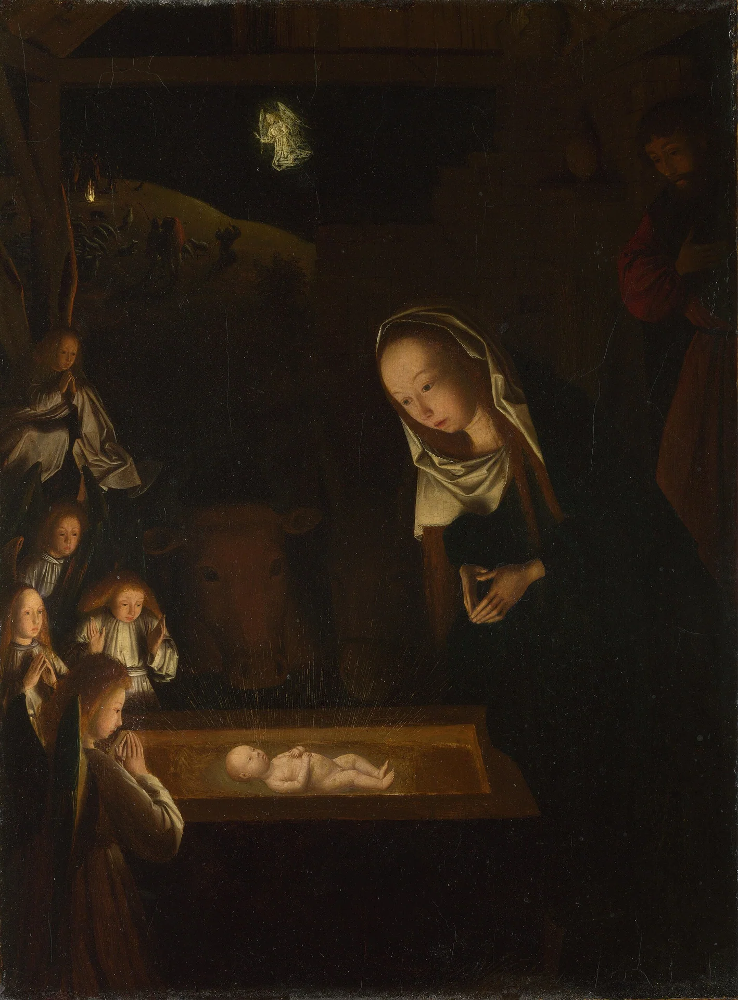
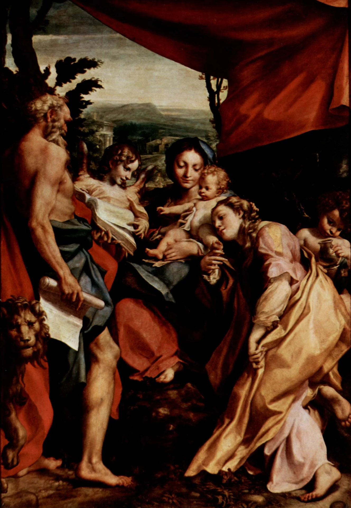
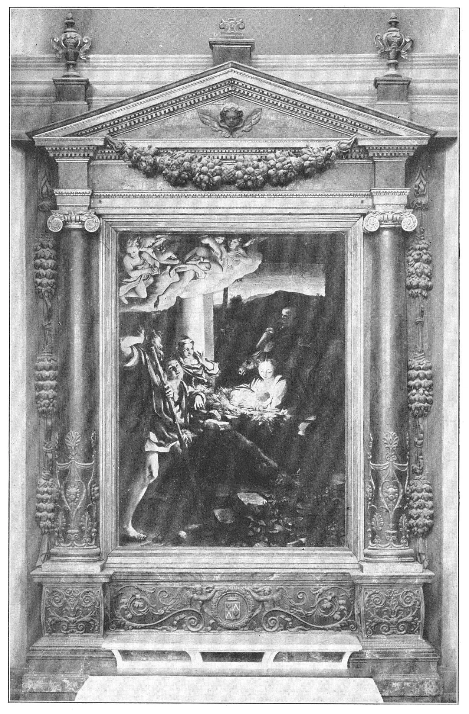
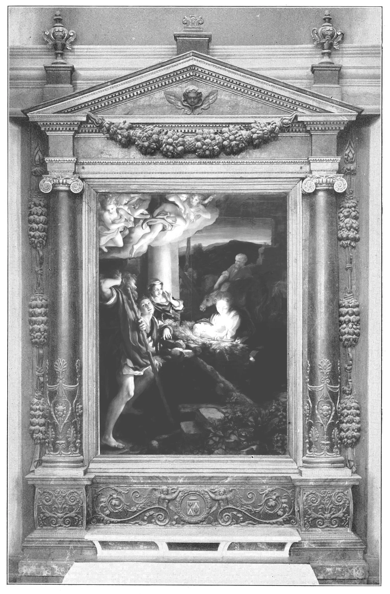
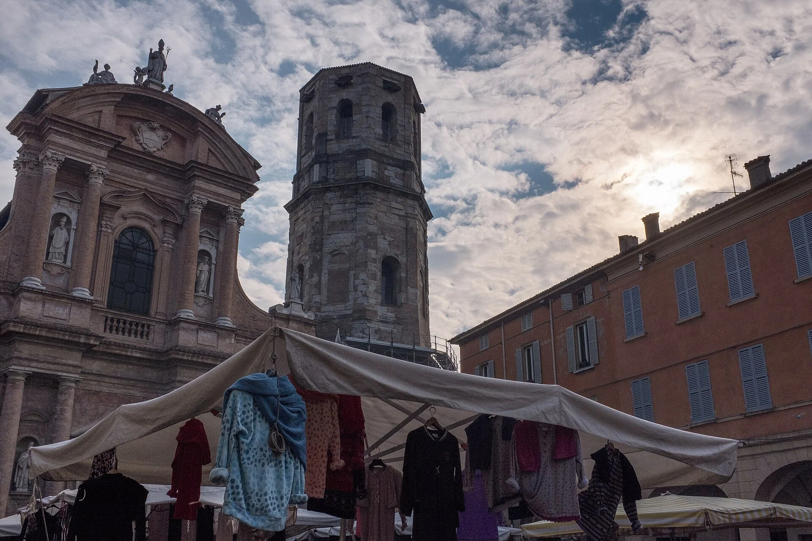

아직 펼치지 않은 카드성탄의 밤을 그린 그림 · 5거룩한 밤누군가 손을 들어 눈을 가렸어요. 무엇이 그렇게 눈부신 걸까요?왜 저 아줌마는 손으로 눈을 가렸을까?
1522~1530년이탈리아 레조 에밀리아 · 지금은 독일 드레스덴 고전 거장 회화관
거룩한 밤
1530년, 이탈리아 레조 에밀리아의 한 성당 예배당(성당 안에 따로 꾸민 작은 제단 자리)에 화가 코레조의 커다란 성탄 밤 그림이 걸렸어요. 백십 년 뒤 그림은 떠났지만, 그림을 감싸던 나무 제단 틀은 지금도 그 자리에서 복사본을 품고 있어요. 손잡이를 밀어, 같은 틀 안의 원본과 복사본을 겹쳐 보세요.
옛날 성당에 아기가 반짝 빛나는 그림이 걸려 있었대. 그림은 멀리 이사 갔지만, 그림 틀은 아직 그 자리에 있대. 같이 가 볼까?
검수 전 시안이에요(기준서 1판). 장면에는 이탈리아 문화재 기록과 미술관·관광 안내, 옛 기록에 있는 것만 옮겼고, 기록이 갈리는 곳은 그렇다고 밝혔어요. ‘그때와 지금’의 왼쪽 그림은 이 안내서가 옛 사진과 원본 그림을 맞춰 만든 그림이에요. 상상은 ‘눈 감고 상상해 보기’에만 썼어요.
시안 확인용카드 단계 미리 보기
1
프라토니에리 집안의 예배당
1522년 10월 14일, 레조 에밀리아의 귀족 알베르토 프라토니에리(Alberto Pratonieri)가 그림값을 치르겠다는 약속 문서를 썼어요. 값은 레조 돈 208리라였어요. 코레조는 같은 날 먼저 40리라를 받았다는 영수증을 썼어요.
그림이 걸릴 자리도 함께 마련됐어요. 이탈리아 문화재 기록은 세모 지붕과 두 기둥을 갖춘 나무 제단 틀(안코나)을 코레조가 설계했다고 전해진다고 적어요. 그림은 1530년, 그 틀 안에 걸렸어요.

그 뒤로 이탈리아와 다른 나라의 화가들이 이 그림을 보러 레조를 찾았어요. 레조 에밀리아 관광 안내는 플랑드르 화가 루벤스도 이 그림을 보러 왔고, 이탈리아 페르모의 성당에 그릴 자기 「목자들의 경배」(목자들이 아기 예수를 찾아와 절하며 기리는 장면)의 실마리를 얻었다고 소개해요.
이 그림은 원래 성당 안 작은 예배당에 걸려 있었대. 먼 데서 화가들이 보러 왔대.
물어보기어두운 예배당에서 이 그림을 보면 어떤 느낌일까?
2
손을 든 여인
코레조가 세상을 떠난 뒤, 화가이자 작가인 조르조 바사리(Giorgio Vasari)는 이탈리아 화가들의 삶을 모은 책 『미술가 열전』에 이 그림을 적었어요. 그는 그림 속 여러 사람 가운데 한 여인을 따로 짚었어요.

“그리스도를 똑바로 바라보려는 한 여인이 있다. 그러나 죽을 몸의 눈으로는 그분 신성의 빛을 견딜 수 없으니, 빛살이 그녀를 내리치는 듯하다. 그래서 여인은 손을 눈앞에 갖다 댄다. 어찌나 잘 그렸는지 놀라울 따름이다.”
조르조 바사리, 『미술가 열전』의 코레조 전기 · 이 안내서가 옮김
바사리가 말한 ‘죽을 몸의 눈’은 언젠가 죽을 보통 사람의 눈, ‘신성’은 하나님다움이라는 뜻이에요.
바사리는 오두막 위에서 노래하는 천사들도 칭찬했어요. 화가의 손으로 그렸다기보다 하늘에서 비처럼 내려온 것 같다고요.
2012년 이탈리아 미술 잡지의 한 글은 이 그림을 이렇게 읽어요. 천사들조차 눈이 부셔 바로 보지 못하는데, 아기를 안은 마리아의 눈만은 그 센 빛에도 감기지 않고 아기를 향해 있다고요.
빛 앞에서 그림 속 사람들은 저마다 달랐어요. 나라면 이 밤에 누구였을까요?
옛날 바사리 할아버지도 이 아줌마 손을 보고 감탄했대. 정말 눈부셔 보이지?
물어보기그림 속에서 눈을 가리지 않고 아기를 보는 사람은 누구야?
3
밤의 빛, 낮의 빛
아기에게서 빛이 나오는 성탄 그림은 코레조보다 앞서도 있었어요. 런던 내셔널 갤러리의 「밤의 성탄」이에요. 미술관은 이 밤의 빛이 14세기 스웨덴의 성녀(성인으로 공경받는 여인) 비르지타가 본 환상에서 왔다고 설명해요.
비르지타는 아기에게서 나온 거룩한 빛이 촛불의 빛을 완전히 지워 버렸다고 적었어요. 네덜란드 지방의 화가 헤이르트헨(Geertgen tot Sint Jans)의 그림은 세로 34cm의 작은 판이에요. 이 카드의 그림인 코레조의 「밤」은 세로가 2.5m를 넘는 제단화(제단 위에 거는 그림)예요.


사람들은 코레조의 이름난 두 제단화를 ‘낮’과 ‘밤’이라고 불렀어요. 둘째 그림 ‘낮’은 지금 파르마 국립 미술관에 있는 「성 히에로니무스의 성모」(성 히에로니무스가 함께 그려진 성모 그림)예요. 환한 하늘 아래 붉은 휘장이 드리운 그림이에요.
더 옛날 그림에서도 아기가 반짝 빛나. 이 화가는 환한 낮 그림도 그렸대!
물어보기밤 그림과 낮 그림, 너는 어느 쪽이 더 좋아?
4
그 자리에 남은 틀
1640년, 그림은 모데나로 떠났어요. 빈자리에는 프랑스 출신 화가 장 불랑제(Jean Boulanger)가 그렸다고 보는 복사본이 들어왔어요. 원본은 포플러 나무판에, 복사본은 천에 그렸지만 크기는 거의 같아요.
복사본은 지금도 산 프로스페로 성당 오른쪽 다섯째 예배당, 코레조가 설계했다고 전해지는 그 틀 안에 있어요. 손잡이를 밀어 틀 안의 두 그림을 겹쳐 보세요.
가운데 손잡이를 밀어, 원본이 걸려 있던 때와 복사본이 걸린 뒤를 같은 틀 안에서 겹쳐 보세요.


왼쪽 · 원본이 걸려 있던 모습을 짐작해 본 그림 · 이 안내서가 만든 그림 · 옛 사진(퍼블릭 도메인) 속 틀에 드레스덴의 원본(퍼블릭 도메인)을 흑백으로 맞춰 넣음
오른쪽 · 산 프로스페로 성당의 제단 틀과 복사본 · 옛 사진(찍은 해 모름) · 사진: 찍은 사람 모름 · 퍼블릭 도메인 · 위키미디어 공용
왼쪽 그림은 이 안내서가 만들었어요. 오른쪽 옛 흑백 사진(찍은 해 모름)의 틀 안에, 드레스덴의 원본을 흑백으로 바꿔 크기와 밝기를 맞춰 넣었어요. 그래서 1530년 틀의 금빛과 푸른빛은 보이지 않아요. 틀은 그대로인데, 그 안의 그림만 바뀌었어요.
그림은 바뀌었어도, 빛 앞에서 손을 든 여인은 원본에도 복사본에도 그대로 있어요.
진짜 그림은 멀리 이사 가고, 따라 그린 그림이 그 틀에 들어갔대.
물어보기손잡이를 밀면 틀 안에서 무엇이 바뀌어?
눈 감고 상상해 보기
새벽이 오기 전, 멀리 언덕 끝이 희미하게 밝아 와요. 머리 위 구름 속에서 천사들의 노랫소리가 내려와요. 짚더미 위 아기 곁만 한낮처럼 환해서, 다가온 사람들의 얼굴이 하나씩 드러나요. 차가운 밤공기 속에서 나귀가 하얀 콧김을 내뿜어요.
눈을 감아 봐. 밤바람이 차가워. 머리 위에서 천사들이 노래해. 아기 곁만 환해서, 다가온 사람들 얼굴이 하나씩 보여.
나의 자리
그리스도를 똑바로 보려다 손을 든 여인. 손을 눈앞에 댄 채로, 그녀는 그 빛 속에서 무엇을 보았을까요?
눈이 부셔서 손을 든 아줌마는, 손 너머로 무엇을 봤을까?
마음에 닿는 한 줄을 고르거나 직접 써 보세요. 한 줄을 남기면 이 자리의 도장이 찍혀요. 이 기기에만 저장돼요.
더 깊이
이야기를 보다 궁금해질 만한 것들이에요. 답을 읽거나 짧은 영화로 보세요.
코레조는 누구예요? 이 그림은 왜 그렇게 이름났어요?
그림은 왜 레조를 떠나 독일 드레스덴까지 갔어요?
뒷이야기
아직 펼치지 않은 이야기예요. 누르면 이야기가 펼쳐지고 색이 돌아와요. 더 알고 싶으면 근거를 따라가 보세요.
다 펼치면, 다음에 오실 때 새 이야기가 찾아와요.
오늘의 뒷이야기는 여기까지예요. 다음에 오시면 새 이야기가 기다리고 있어요.
펼친 뒷이야기 · 누르면 다시 볼 수 있어요
더 찾아보기
기록마다 다른 점
약속한 날 이탈리아 문화재 기록과 옛 영어 일화집은 1522년 10월 14일, 에스텔 헐의 해설서는 10월 10일로 적어요.
가져갔을까, 훔쳤을까 문화재 기록은 1640년 그림이 공작의 수집품으로 들어갔다고만 적고, 2026년 이탈리아 신문 기사는 공작이 자기 화랑에 두려고 모데나로 옮기게 했다고 써요. 에스텔 헐의 해설서는 ‘1640년 5월 성당에서 도둑맞았다’고, 옛 영어 일화집은 공작의 명령으로 ‘몰래’ 옮겼다고 적어요.
팔린 해 1745년에 팔렸다고 적은 곳도 있고, 1746년이라고 적은 곳도 있어요. 모데나 쪽 재단 잡지의 글은 거래가 1746년 봄까지 이어졌다고 설명해요.
그린 때 1522년에 맡아 1530년에 걸었다는 데는 기록이 같아요. 하지만 실제로 그린 때는 1522~1530년 무렵(드레스덴 공대 강연 안내), 1525~1530년(제리 재단 사진 목록), 1529~1530년 무렵(레조 에밀리아 관광 안내)처럼 저마다 달라요.
그림과 함께 읽는 말씀
이 그림은 누가복음의 성탄 밤 이야기를 그렸어요. 그림과 함께 읽을 말씀을 이 안내서가 두 군데 골라 뜻을 풀어 옮겼고, 본문은 대한성서공회 개역개정으로 이어져요.
누가복음 2장 8~9절 밤에 들에서 양 떼를 지키던 목자들 곁에 주의 천사가 서고, 주의 영광이 그들을 두루 비추어요. 목자들은 몹시 두려워해요.
누가복음 2장 30~32절 성전에서 아기 예수를 품에 안은 시므온이 말해요. 내 눈이 주의 구원을 보았다고, 이 아기는 이방을 비추는 빛이라고요.
직접 가 보기

확인한 날 · 2026년 11월 18일 · 바뀌기 쉬운 정보라 정기적으로 다시 확인해요
원본 독일 드레스덴 츠빙거 궁전의 고전 거장 회화관(Theaterplatz 1)에 있어요. 월요일은 쉬고, 화~일 오전 10시~오후 5시에 열어요. 2026년 11월 27일~12월 27일의 금~일은 오후 6시까지, 12월 24일은 오후 2시까지예요.
코레조 특별전 2026년 9월 19일부터 2027년 1월 10일까지 이 미술관에서 코레조 특별전(Correggio. Berührend menschlich)이 열려요. 특별전만 보는 표는 어른 14유로예요. 2026년 7월 이탈리아 신문 기사에 따르면 「밤」은 이 전시에서 방 하나를 따로 차지해요.
복사본과 틀 이탈리아 레조 에밀리아의 산 프로스페로 성당(Piazza San Prospero) 오른쪽 다섯째 예배당에 있어요. 성당은 날마다 오전 8시~12시, 오후 4시~7시에 열어요. 미사와 다른 행사 때는 둘러볼 수 없어요.
성당 앞 돌사자 성당 앞 돌사자 받침 가운데 하나에는, 성당을 다시 짓는 데 힘을 보탠 귀족 지롤라모 프라토니에리의 옆얼굴이 새겨져 있어요.
틀 안의 두 그림 겹쳐 보기 금박
손잡이를 양쪽 끝까지 밀어 원본과 복사본을 다 보면 카드에 금박이 입혀져요.
손잡이를 양쪽 끝까지 밀어 원본과 복사본을 다 보기
그 밤의 빛 앞에서 채색
둘 가운데 하나만 해도 카드가 채색돼요.
빛 앞의 사람들 가운데 나라면 누구였을지 고르기
아이와 함께 ‘영화처럼 보기’를 끝까지 보기
근거 보기 (26)
- 이탈리아 문화재 목록(ICCD): 제단 틀(안코나) — 1522년 10월 14일 프라토니에리의 주문, 코레조가 설계했다고 전함, 1530년 자리에, 포플러 나무 조각·금박·칠, 1863년 다시 칠함과 베차니 집안 문장, 20세기 고침, 금박과 푸른 칠이 가려짐, 불랑제의 복사본이 원본을 대신함
- 이탈리아 문화재 목록(ICCD): 불랑제의 복사본 — 1640년, 천에 유화, 251.5×187.5, 원본은 그해 모데나 공작의 수집품으로, 1746년 드레스덴으로
- 피네스트레 술라르테: 알비네아의 성모 — 그림 설명의 ‘프랑스 화가 장 불랑제(트루아 1606 ~ 모데나 1660)’
- 모데나 에스텐세 도서관 자료(artsupp 소개): 1522년 10월 14일 프라토니에리의 약속 문서와 코레조의 영수증(옛 베낀 본) — 레조 돈 208리라, 같은 날 40리라를 먼저 받음
- 옛 영어 일화집(S. 스푸너, grandearte 디지털 도서관): 1522년 10월 14일, 208리라 = 금화 47개 반쯤, 1530년에야 자리에, 공작의 명령으로 몰래 옮기고 복사본을 둠
- 에스텔 헐의 해설서(grandearte 디지털 도서관): 1522년 10월 10일 약속, 1640년 5월 도둑맞아 모데나로
- 에스텔 헐의 해설서: 「성탄」 → ‘밤’ → 독일에서 ‘거룩한 밤’이라는 이름
- 피네스트레 술라르테(2012, 암브라 그리에코): 바사리의 글(빛을 견디지 못해 손을 눈앞에 댄 여인, 하늘에서 비처럼 내려온 듯한 천사들), 눈부시지 않는 마리아의 눈이라는 풀이, 레조로 그림을 보러 온 화가들
- 레조 에밀리아 관광 안내: 「밤」 — 1522년 10월 주문, 1529~1530년 무렵 완성, 이탈리아와 다른 나라 화가들, 루벤스와 페르모의 「목자들의 경배」, 원래 틀 속 복사본, 엔차 강 골짜기의 언덕
- 레조 에밀리아 관광 안내: 「거룩한 밤」 — 원래 틀 속 복사본, 발 덴차 언덕, 성당 여는 시간
- 레조 에밀리아 관광 안내: 산 프로스페로 성당 — 오른쪽 다섯째 예배당의 복사본, 돌사자 받침의 지롤라모 프라토니에리, 미사 중 관람 안 됨
- 뮤제이온라인: 산 프로스페로 성당 — 5번째 오른쪽 프라토니에리 예배당, 원래 틀 속 복사본, 1745년 판매
- 일 레스토 델 카를리노(2026년 7월 22일): 1740년 무렵 모데나에서 이 그림을 본 드 브로스의 감탄, 1530년부터 전시, 1640년 모데나로 옮기고 불랑제에게 복사본을 맡김, 1746년 돈이 모자란 프란체스코 3세의 판매(10만 체키노, 백여 점), 2차 대전 피난·모스크바·1955년 반환, 드레스덴 전시의 「밤」 전시실
- 피네스트레 술라르테(프랜시스 해스컬): 1745~1746년 아우구스트 3세에게 팔린 그림 백여 점, 「성 히에로니무스의 성모(낮)」 1526~1528년 · 파르마
- 피네스트레 술라르테(2020, 주세페 아다니): ‘낮’과 ‘밤’이라 불린 두 제단화, 1530년 프라토니에리 예배당에
- 모데나 에스텐세 재단 잡지(야드란카 벤티니): 작센 선제후와의 거래가 1746년 봄까지 이어짐
- 런던 내셔널 갤러리: 「밤의 성탄」 — 1490년 무렵, 34×25.3cm, 아기의 빛, 비르지타의 환상(촛불 빛을 지운 거룩한 빛)
- 드레스덴 공대 강연 안내(2026): 「거룩한 밤」 1522~1530년 무렵, 포플러 나무판, 256.5×188cm, 산 프로스페로의 집안 예배당을 위한 그림
- 페데리코 제리 재단 사진 목록: 1525~1530년, 나무판 256.5×188cm, 산 프로스페로(~1640) → 에스테 수집품(1640~1746) → 드레스덴
- 드레스덴 고전 거장 회화관: 코레조 특별전(2026년 9월 19일~2027년 1월 10일)
- 드레스덴 고전 거장 회화관: 방문 안내 — 여는 시간, 주소, 특별전 표값
- 누가복음 2장(개역개정) — 밤에 양 떼를 지키던 목자들, 오늘 구주가 나셨다는 천사의 소식, 목자들을 두루 비춘 주의 영광
- DWDS 독일어 사전: Heilige Nacht — 성탄 전날과 성탄절 사이의 밤
- 피츠윌리엄 박물관: 코레조, 「목자들의 경배」 소묘 — 르네상스의 다섯 거장(레오나르도·미켈란젤로·라파엘로·티치아노와 함께), 「밤」은 극적이고 새로운 목자들의 경배, 아기가 내는 초자연적인 빛, 빛에 하얗게 바랜 마리아의 얼굴
- 런던 내셔널 갤러리: 코레조 — 안토니오 알레그리, 파르마 가까운 고향 마을의 이름으로 불림, 1534년 세상을 떠남
- 메트로폴리탄 미술관 보도 자료(2013): 벨라스케스의 「프란체스코 1세 데스테의 초상」 — 1638년 가을 스페인에서 그림, 모데나 에스텐세 미술관, 프란체스코 1세(1610~1658)는 1629년 모데나·레조 에밀리아의 공작, 황금 양털 훈장
그림·사진·소리 출처
- 코레조 그림 · 퍼블릭 도메인 · 위키미디어 공용(Google Art Project)
- 사진: sailko · CC BY 2.5 · 위키미디어 공용
- 사진: 찍은 사람 모름 · 퍼블릭 도메인 · 위키미디어 공용
- 이 안내서가 만든 그림 · 옛 사진(퍼블릭 도메인) 속 틀에 드레스덴의 원본(퍼블릭 도메인)을 흑백으로 맞춰 넣음
- 헤이르트헨 토트 신트 얀스 그림 · 퍼블릭 도메인 · 위키미디어 공용
- 코레조 그림 · 퍼블릭 도메인 · 위키미디어 공용
- 사진: Giorgio Galeotti · CC BY 4.0 · 위키미디어 공용
- 코레조 그림 · 퍼블릭 도메인 · 위키미디어 공용(Google Art Project)
- 코레조 그림 · 퍼블릭 도메인 · 위키미디어 공용(Google Art Project)
- 코레조 그림 · 퍼블릭 도메인 · 위키미디어 공용(Google Art Project)
- 코레조 그림 · 퍼블릭 도메인 · 위키미디어 공용(Google Art Project)
- 주세페 바르베리스 목판화 · 퍼블릭 도메인 · 위키미디어 공용
- 사진: Sailko · CC BY-SA 4.0 · 위키미디어 공용
- 코레조 그림 · 퍼블릭 도메인 · 위키미디어 공용(Google Art Project)
‘처음 만나는 기독교 문화’의 깊은 카드예요. 카드 단계와 남긴 글은 이 기기에만 저장돼요.